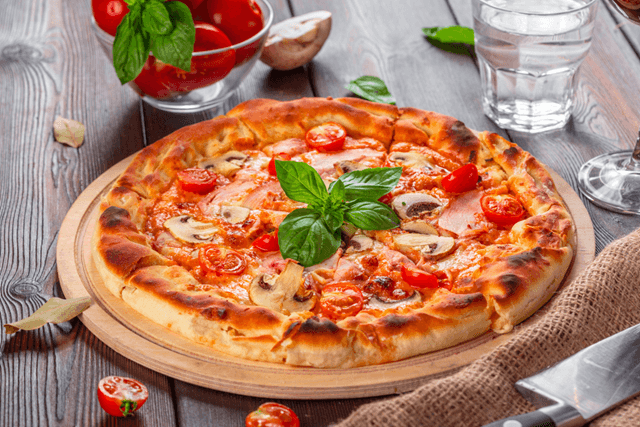
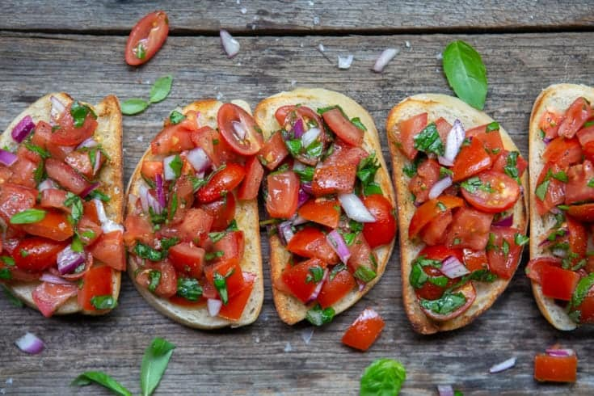

Pasta's
Our pastas are made with a special recept from our home. we have all different kinds of pastas, there is also a vegan and a gluten free kind of pasta available. want to know more? ask about the possibilities we have. our newest edition is the brocolli based pasta dough

Pizza's
a flat, open-faced baked pie of Italian origin, consisting of a thin layer of bread dough topped with spiced tomato sauce and cheese, often garnished with anchovies, sausage slices, mushrooms, etc. all mixes are possible! feel free to ask about all the gluten free options
breads
we have 21 different kinds of italian breads in our assortiment. Italy has an incredible variety of breads, with many regional versions of flatbread, sourdough and your traditional loaf. It’s definitely worth trying some of the specialist breads that are available – you’re sure to find a new favourite!
